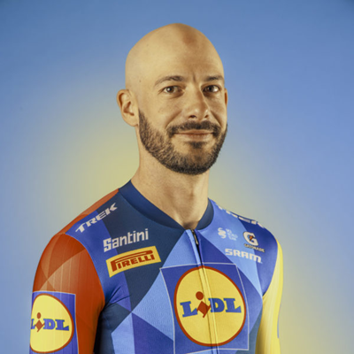

Julien Bernard
Datos personales
- Nombre completo: Julien Bernard
- Fecha de nacimiento: 17 de marzo de 1992
- País de nacimiento: Francia
- Equipo: Lidl-Trek
- Dorsal: 82

Datos equipos
- Lidl-Trek (2024 - actualidad)
- Trek-Segafredo (2016 - 2023)
- Trek Factory Racing (2015, como stagiaire)
Temporada 2025
| Nombre del dato | Resultado |
|---|---|
| Equipo | Lidl-Trek |
| Campeonato de Francia en ruta (élite) | 7º |
| Tour Auvergne-Rhône-Alpes, 3ª etapa (Brioude - Charantonnay) | 8º |
| Japan Cup (Utsunomiya) | 9º |
| Andorra MoraBanc Clàssica | 11º |
| La Vuelta a España, 10ª etapa (Sendaviva - Larra Belagua) | 17º |
| Étoile de Bessèges - Tour du Gard, 1ª etapa (Bellegarde - Bellegarde) | 22º |
| Tour de la Provence, 2ª etapa (Forcalquier - Manosque) | 24º |
Fuente: ficha oficial del ciclista en la web de La Vuelta 2026.
Multimedia
Equipo Lidl-Trek en la Vuelta Ciclista a España 2026.